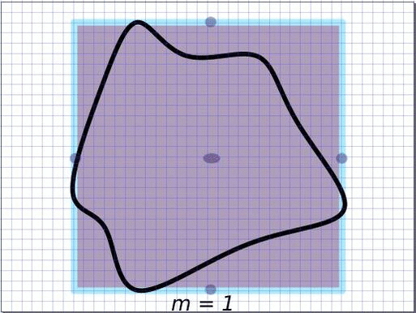

Integral Transforms of Constructible Functions. Master's Thesis, University of Padova, September 2010 (Supervisor: Andrea D'Agnolo). [link]
In this thesis we consider the transversality incidence relation for an integral transform for general Grassmannians, in the framework of constructible functions. We have two main results. On one hand, we show that for dual Grassmannians the transversality incidence relation is self adjoint. On the other hand, under certian assumptions, we prove that the associated Radon transform has an inverse. The thesis has been available also on ALGANT webpage since October 2010.
To a tropical p-cycle V_\mathbb{T} in R^n, we associate a normal closed and (p,p)-dimensional current on (C^*)^n denoted by \mathscr{T}_n^p(V_T}). Such a ``tropical current'' $\mathscr{T}_n^p(V_{\mathbb{T}})$ is not an integration current along any analytic set, since its support has the form Log^{-1}(V_T)\subset (C^*)^n$, where Log is the coordinate-wise valuation with log(|.|). We provide sufficient (local) conditions on tropical p-cycles such that their associated tropical currents are ``strongly extremal'' in $\mathcal{D}'_{p,p}((C^*)^n)$. In particular, if these conditions hold for the effective cycles, then the associated currents are extremal in the cone of strongly positive closed currents of bidimension (p,p) on $(C^*)^n$.
Complex Tropical Currents. PhD Thesis, Universities of Bordeaux and Padova, July 2014 (Supervisors: Alain Yger, Andrea D'Agnolo). [link]
The thesis has the following Chapters
1. An introduction to the theory of currents
2. Basic definitions/theorems in tropical geometry
3. Definition and main theorems on extremality of tropical currents from the preceding article.
4. Showing how applying an interesction theory of currents (following Bedford-Taylor/Demailly theory) to tropical currents can lead to a tropical intersection theory.
5. Relations between approximation of extremal currents with a strong version of Hodge conjecture are explained. A theorem is proved which relates approximations of tropical cycles by amoebas to approximation of associated currents by analytic cycles.
A Tropical Approach to a Generalized Hodge Conjecture for Positive Currents (with June Huh). Duke Math. J. 166 (2017), no. 14, 2749–2813. [arXiv][journal]
Finally we were able to find an example of a tropical extremal current on a toric variety which is not approximable by positve multiples of integration currents along irreducible analytic cycles. Therefore, there's a positive current, with cohomology class in the (integral) Hodge group, which cannot be approximated by sums of integration currents. In other words, the Hodge conjecure for positive currents is not true in general. We recall that on toric varieties, balanced complexes supported on the subfans of the toric variety can represent Dolbeault cohomology classes. As a consequence, even the integral Hodge conjecture holds true on a toric variety, where already the strong version for the positive current fails. The obstruction by approximation of the mentioned exremal current is cohomological and is induced by the Hodge index theorem.
Convexity of Complements of Tropical Varieties and Approximations of Currents (with Karim Adiprasito). Mathematische Annalen, 2018, 1–15. [arXiv][journal]
The goal of this note is to affirm a local version of conjecture of Nisse--Sottile [NS16] on higher convexity of complements of tropical varieties, while providing a family of counter-examples for the global Nisse--Sottle conjecture in any codimension and dimension higher than 1. Moreover, it will be shown that, surprisingly, this family also provides a family of counter-examples for the generalized Hodge conjecture for positive currents in these dimensions, and gives rise to further approximability obstruction.
Dynamical Tropicalisation. Journal of Geometric Analysis (2023), Special Issue in Memory of Nessim Sibony. [arXiv], [journal]
We analyse the dynamics of the pullback of the map $\Phi_m: z \longmapsto z^m$ on the complex tori and toric varieties. In the figure below, the toric variety associated to the square is P^1 \times P^1. The interior of the square corresponds to the two dimensional orbit O({0}), and the sides of the square to one dimensional orbit closures. On the first frame of the animation, the tropical compactification of a curve in P^1 \times P^1 is considered, where the intersections with the one dimensional toric orbits are indeed proper and have multiplicity two. All the toric orbits remain invariant under Phi^{-1}_m, and after applying Phi^{-1}_m, the points in each toric orbit move towards the compact torus above the corresponding distinguished points. By applying \Phi*_m to the integration current along the closed curve we obtain a local covering. Multiplying by 1/m normalises the total mass which is depicted in the thickness of the curves. The limit becomes the associated tropical current whose fibers are transverse to the toric orbits, where the weights account for the intersection multiplicity numbers. Accordingly, the intersection points of multiplicity two converge to the transverse (non-normalised) Haar measures on the distinguished circles with mass two.

Extremal Decompositions of Tropical Varieties and Relations with Rigidity Theory (with Sean Dewar and James Maxwell). Journal of Symbolic Computation, 2025. [arXiv], [journal]
Extremality and irreducibility constitute fundamental concepts in mathematics, particularly within tropical geometry. While extremal decomposition is typically computationally hard, this article presents a fast algorithm for identifying the extremal decomposition of tropical varieties with rational balanced weightings. Additionally, we explore connections and applications related to rigidity theory.
In particular, we prove that a tropical hypersurface is extremal if and only if it has a unique reciprocal diagram up to homothety. We further show that our approach also allows for computing Chow Betti numbers for complete toric varieties.
Continuity of Slices of Currents and Applications in Tropical Geometry (with Tien Cuong Dinh). arXiv:2506.09828 (2025). [arXiv]
We study the question of the continuity of slices of currents and explain how it relates to several seemingly unrelated problems in tropical geometry. On the one hand, through this lens, we show that the continuity of superpotentials constitutes a very general instance of stable intersection theory in tropical geometry. On the other hand, questions concerning tropicalisation with respect to a non-trivial valuation and the commutativity of tropicalisation with intersections offer insights to the problem of the continuity of slices of currents converging to a tropical current. Within our framework, we reformulate and reprove known theorems in tropical geometry and derive new results and techniques in both tropical geometry and complex dynamical systems.